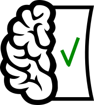
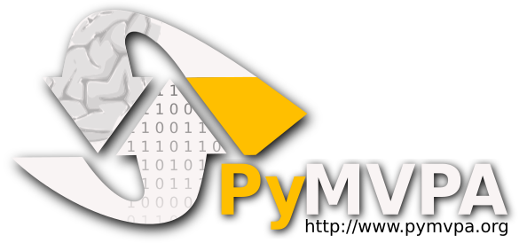
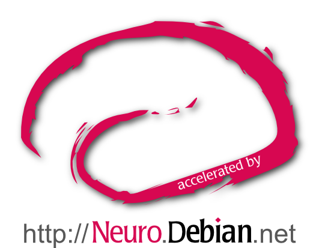
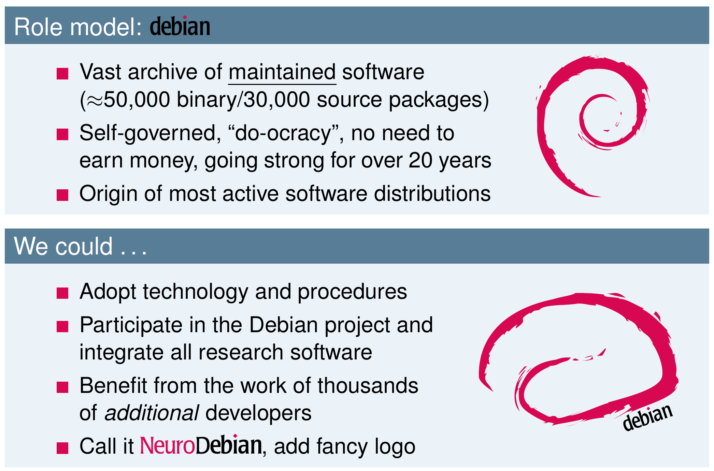

Reuse, Compose, Extend, Standardize, Automate
Two Decades of RSEing Open (Neuro)Science at CON
|
Yaroslav O. Halchenko + Cody Baker, Austin Macdonald, Isaac To, John A. Lee, Vadim Melnik — the CON team  @yarikoptic @yarikoptic
|
|
|
Center for Open Neuroscience Department of Psychological and Brain Sciences Center for Cognitive Neuroscience Dartmouth College New Hampshire, USA 
|
Live slides/Sources: https://datasets.datalad.org/centerforopenneuroscience/talks/2026-usrse-con-talk.html




It’s 2026. AI writes code.
AI tends to produce silos.
AI exemplifies silo projects.
“… by adopting LLMs people tend to code single-use software from scratch. While this leads to an increase in ‘shared’ code, it is mostly code that not only has not been ‘written’ by anyone but is also not maintained by anyone.”
“You can develop at a rapid pace, build things as if you had a large team. Only that you have none. In fact, you are (often) alone, working with a statistical machine that turns energy into code.”
— B. Greshake Tzovaras, O. Richter, W. Zijl, “Protecting our FLOSS commons from LLMs”, Codeberg e.V., 23 July 2026
The antidote has a name.
REUSE
COMPOSE
EXTEND
STANDARDIZE
AUTOMATE
“We’ve been building this immune system for 20 years.”
Twenty years, building one structure
Nine pieces — in neuroimaging, and well beyond it. Every one of them built because something was missing in front of us, never to a plan.
“It started as an accident.”
“2000. A neuroscience grad student joins a Debian developer’s lab.”
Fernando Perez was building IPython in the same open-science community. Same instinct: reuse the ecosystem, not just the code.

M. Hanke, Y. O. Halchenko, P. B. Sederberg, et al. PyMVPA: A Python toolbox for multivariate pattern analysis of fMRI data. Neuroinformatics, 7:37–53, 2009. doi: 10.1007/s12021-008-9041-y
2007. Full test suite. CI. Tutorials. Before it was common.
REUSE
The cheapest reproducible thing is the one you didn’t have to build.

Y. O. Halchenko and M. Hanke. Open is not enough. Let's take the next step: An integrated, community-driven computing platform for neuroscience. Frontiers in Neuroinformatics, 6(00022), 2012. doi: 10.3389/fninf.2012.00022
Born by joining Debian. Not forking it.
NeuroDebian: a textbook bridge

Eventually most of it dissolved upstream into Debian Med, Debian Science, and conda-forge. A successful bridge dissolves into the commons.
One upstream search pass saves a thousand local fixes.
REUSE
Debian DEP-5 → REUSE spec: machine-readable licensing, per file.
/introduce-reuse-complianceWe reuse the standard and automate its adoption.
REUSE
Compose — small modules, common substrate
Sandwich, don't silo.
(DE)COMPOSE
Extend — stay on as maintainer
Ship pragmatic now, formalize upstream later.
EXTEND
Not an ending — a handover upwards

Debian Med · Debian Science · Debian Python Team
Small team, wide scope → big teams, each with a narrower one.
Packages we used to carry alone are now co-maintained: more hands, a bus factor above one.
Later — psychopy moves to Debian Med in 2020;
nifticlib, gifticlib, odin, cmtk follow over the next two years.
The DataLad sandwich
Layered tech that everyone already knows
graph TB
user --> datalad[datalad get file] --> git-annex[git-annex get file] -.-> git-annex-remote-archives --> git-annex2[git-annex get --key XXX.tar.gz] -.-> git-annex-remote-datalad
datalad --> git1[git]
git-annex --> git2[git]
git-annex2 --> git3[git]
classDef green fill:#40bf4c,stroke:#333,stroke-width:1px;
classDef orange fill:#ffa200,stroke:#333,stroke-width:1px;
classDef red fill:#f44d27,stroke:#333,stroke-width:1px;
class datalad orange
class git-annex-remote-archives orange
class git-annex-remote-datalad orange
class git-annex green
class git-annex2 green
class git red
class git1 red
class git2 red
class git3 red
DataLad: distributed system for joint management of code, data, and their relationship. Halchenko et al., JOSS 2021.
DataLad extensions: domain-agnostic core, à la carte add-ons
graph LR datalad --> datalad-crawler datalad --> datalad-container datalad --> datalad-neuroimaging datalad --> datalad-osf datalad --> datalad-fuse datalad --> datalad-xnat datalad --> datalad-ukbiobank datalad --> datalad-next datalad --> ... classDef orange fill:#ffa200,stroke:#333,stroke-width:1px; classDef orangy fill:#ffc200,stroke:#333,stroke-width:1px; class datalad orange class datalad-crawler orangy class datalad-container orangy class datalad-neuroimaging orangy class datalad-osf orangy class datalad-fuse orangy class datalad-xnat orangy class datalad-ukbiobank orangy class datalad-next orangy
Extensions = separate Python packages, ride on datalad-extension-template — your domain plugs in, neuroimaging is just one of many.
Federate, don’t recentralize

registry.datalad.org indexes DataLad datasets across institutions and clouds — discovery over petabytes, no platform required.
Standardize — a language for HI and AI
All standards are “bad”, but some are used.
after D. Clunie, MICCAI 2017
Data: BIDS & NWB
Gorgolewski, K. J., Auer, T., …, Halchenko, Y. O., …, Poldrack, R. A. (2016). The brain imaging data structure, a format for organizing and describing outputs of neuroimaging experiments. Scientific Data, 3:160044.
You've seen one BIDS dataset, you've seen them all. That's the point.
BIDS as a meta-standard

Not a wire format — a contract. 11 modalities · 25 active BEPs · a machine-readable schema · a validator · turnkey BIDS-Apps — all hang off it.
What a usable standard is made of

|
|
None of this is neuroimaging. It is the anatomy of a standard your field can adopt — and the contract an agent can be held to.
M
Schema. Machine-readable. Deterministically validatable.
C
Tools that operate on the Model.
V
Use-case views on the same data.
Examples: lab website, reports, discovery portals
Same M → endless C and V.
This is why standards compound.
The object so far — 2016
Four pieces. One of them, Open Brain Consent (2015), is not software at all — it is consent text, and without it nothing downstream can be shared. Legal artifacts are part of the engineering.
ReproIn + HeuDiConv
Acquire reproducibly.
Sequence naming convention at the scanner → DICOM → BIDS, no human in the loop.
///repronim/containers
Pinned environments. Everywhere.

datalad containers-run —
the image is a tracked subdataset, not a latest tag that drifts, and the commit records
the image and the command together. Throw the container away afterwards: that is the point, and it is already how agents run.
Small units. Common substrate.
No glue code you own alone.
“AI generates glue. Nobody owns the glue.”
Deliberate interfaces outlast generated adapters.
ReproMan
Run it there. Record what “there” was.
Started 2016 as NICEMAN. Submit to containers, AWS, SLURM/condor — and collect the
environment (Debian and conda packages, VCS revisions) in enough detail to re-create it.
M. Travers, R. Buccigrossi, C. Haselgrove, K. Meyer, and Y. O. Halchenko.
NICEMAN: NeuroImaging Computational Environments Manager, OHBM 2018.
ReproMan’s afterlife: con/duct
ReproMan asked what did that remote run actually cost?
brainlife’s smon showed how to sample it.
2024: duct <cmd> — no third-party dependencies, uniform records.
Later, well out of this era — but it belongs to this story, not to 2024.
Already adopted inside ReproNim/containers and
ReproStim; RRID:SCR_025436.
Poster this week: Austin Macdonald, C. C. Baker, J. A. Lee, Y. O. Halchenko,
Agent-friendly
Provenance Capture with con-duct — the patterns of use with AI agents are on it.
Go find Austin.
NWB + Kitware
Academic RSE ↔ engineering industry.
Sustained collaboration on browse / analyze / visualize tooling.
NWB — Neurodata Without Borders

Standard for neurophysiology. Same principle.
STANDARDIZE
The object so far — 2020
Seven. The environment now travels with the record, and ReproStim (2020) captures what the participant actually saw, rather than what the stimulus script was supposed to show.
NeuroConv + nwb2bids
Convert once, use everywhere.
Raw physiology → NWB; NWB → BIDS layout. Two flagship standards, one bridge.
BIDS Steering Group + WG-16
Advisory. Standards evolution.
Co-evolving the standard, not just consuming it.
BEP028: DataLad’s ad-hoc
RUNCMD provenance lifting into BIDS.
From ad-hoc to standard, in one slide
flowchart LR RUNCMD["DataLad RUNCMD
(2015, ad-hoc JSON in commit msgs)"] --> BEP["BEP028
BIDS provenance"] RUNCMD --> EXP["bids-prov-exporter
(WiP)"] BEP --> COMMUNITY["BIDS standard
(community-owned)"] EXP --> COMMUNITY classDef orange fill:#ffa200,stroke:#333,stroke-width:1px; classDef green fill:#40bf4c,stroke:#333,stroke-width:1px; class RUNCMD orange class BEP green class COMMUNITY green
Take home: the next time you reach for your own JSON-in-a-commit-message format, ask which upstream standard it should fold back into.
“AI extends by adding. It rarely stays to maintain.”
Staying on as maintainer is the non-automatable contribution.
LinkML
Schemas that compose.
Built 2 hours north, at LBNL (Lawrence Berkeley National Laboratory).
Reused identifier, not invented.
Reused identifier, not invented.
Reused identifier, not invented.
National archives. Built on shared standards.
What's in DANDI

DANDI ecosystem — integrate, don't re-implement

Automate — or it doesn’t happen at scale
If a human has to remember it, it’s already broken.
con/tinuous
“CI logs archived. Every PR. Every build.”

git-annex daily tests
“DataLad and git-annex: tested daily. Automatically.”

dandisets mirror
“Auto-mirrored. Petabytes. No human in the loop.”

Cost: harnesses, harnesses, harnesses
Each automation is itself code — CI YAML, hooks, nightly cron, deploy scripts, glue. Someone maintains that.
By 2024 the harness was bigger than several of the projects under it.
That is why a small RSE center was dragged toward AI assistance
— not for the science, but for the
maintenance of the meta-layer.
con/skills + con/yolo: we automate the harness itself.
- The sandbox is the only piece that enforces self-containment — inside a fresh container, what you did not declare is simply not there. The property gets checked on every run instead of being a virtue you remember.
- Pre-flight, then run. Assert every credential, token and access path before the job starts — fail in the first second, not in hour three with half a dataset written.
“The tests don’t know the code was AI-generated.”
“Agent-rate output demands agent-rate review.”
“con/duct watches every process. AI agents included.”
AUTOMATE
The object so far — 2024
Nine. The object was finished before we had a name for what it was.
duecredit
Automated scholarly credit tracking.
citations-collector
Citation harvesting for your stack.
“What if AI attribution worked the same way?”
SPDX-FileContributor: assisted-by-ai: Claude Code 2.1 / Claude Sonnet 4.6File-level AI provenance that survives redistribution.
We filed the issue.
“Agents don’t search. They generate.”
Reuse requires asking “does this exist?” before the first keystroke.

Seven properties a research object should have —
whoever, or whatever, picks it up next.
For research objects, we wrote the standard ourselves: stamped-principles.org
Twenty years, nine tools, one object
“Without standards, AI produces cacophony at scale.”
Standards are the framing and validation layer for any AI endeavor.
One instance of the pattern:
lab knowledge management.
ORINOCO → ORINOCO-Lite
INM-7 Jülich → CON, GitHub-native
Reusing ORINOCO (Michael Hanke / INM-7) and composing with GitHub Actions/Pages.
AI drafts candidate records.
Schema validates.
Humans curate via PR.
Posters this week:
ORINOCO-Lite · STAMPED · con/duct
Come find us.
Standards give both HI and AI a shared grammar.
Reuse, in reverse
Your data is yours, even when someone else hosts it.
Pull content back: AnnexTube / mykrok / con/serve
YouTube → DataLad. Cloud silos → git-annex. AI sessions → subdatasets.

con/duct — wall time, CPU, memory, per task. Per agent run.
“con/tinuous archives every run. AI-assisted runs included.”
“datalad run records every transformation.
Agent-written or hand-written.”
“Provenance doesn’t care who wrote the code.”
REUSE · COMPOSE · EXTEND
STANDARDIZE · AUTOMATE
“These are not 20-year-old advice.”
They are the load-bearing structure for the age of AI.
AI makes going alone tempting.
Fast. Flexible. Free of dependencies.
You are alone.
You are not. — acknowledgements
Together.
A hundred agentic projects reinventing the same infrastructure…
…is a hundred times the debt.
One collaborative ecosystem.
DANDI
BIDS
DataLad
OpenNeuro
NWB
EMBER
microscopy · behavior
Others are formalizing this too.
“Networked Intelligence: Active Shared Context Graphs
for Human-AI Team Science”
Choudhury, S. et al. (2026). arXiv:2607.13220
Scale the connections, not just the agents.
“The open problem is therefore not only how to scale models, but how to develop ‘networked intelligence’, scaling the connections between humans and AI systems so that a result or hypothesis produced in one context reaches another person, agent, instrument or robot that can act on it.”
The principles don’t change. The urgency does.
Together we can make neuroscience a better science!
Thank you!
Reuse. Compose. Extend. Standardize. Automate.
Slides: datasets.datalad.org/…/2026-usrse-con-talk.html — CC-BY-SA